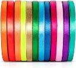

Cintas
Raso
La cinta de raso es una de las cintas de tela más usadas dentro de la cintería fina. Las principales características de este producto son su sedosidad y su brillo que le confiere el tipo de ligamento que se utiliza para fabricarla.

Gross
En resumen, se trata de una cinta acanalada de doble cara, por lo que se puede considerar reversible, se fabrica principalmente en poliéster, aunque las hay en otros materiales tales como el rayón o el algodón. Antiguamente esta importante cinta de tela se fabricaba con telares convencionales.